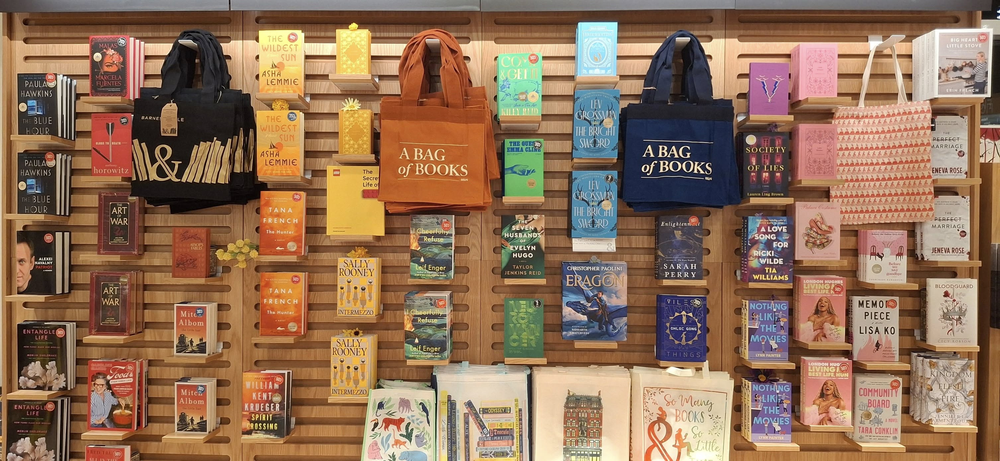

About the Barnes & Noble Company
A Comprehensive Business Overview
Barnes & Noble is the largest retail bookseller in the United States, with approximately 600 bookstores nationwide and a strong online presence through its official website BN.com (https://www.barnesandnoble.com/) . The company has evolved over the years, adapting to changes in the publishing industry and consumer preferences. It offers a wide range of products, including books, eBooks, audiobooks, stationery, toys, and educational materials. Additionally, Barnes & Noble operates NOOK®, its digital reading platform, and SparkNotes, a study guide service.

Background History: From Small Bookstore to Industry Leader
Barnes & Noble traces its origins back to 1886, when it was founded as a small bookstore in New York City. The company officially became Barnes & Noble in 1917 and grew significantly under Leonard Riggio, who acquired it in 1971. Riggio transformed the business into a large-scale bookselling chain, introducing large-format bookstores that became a staple for book lovers.
Over the years, Barnes & Noble faced challenges from online retailers like Amazon, which disrupted the traditional bookstore model. In response, the company expanded its digital offerings, launching the NOOK® e-reader to compete in the eBook market. However, competition remained fierce, leading to financial struggles. In 2019, Barnes & Noble was acquired by Elliott Advisors (UK) Limited, with James Daunt appointed as CEO. Daunt, known for revitalizing Waterstones bookstores in the UK, has focused on improving store layouts, enhancing customer experience, and fostering a more independent bookstore atmosphere.

Services and Events: More Than Just a Bookstore
Barnes & Noble offers a diverse range of services and events that go beyond bookselling, making it a vibrant hub for readers and literary enthusiasts. Its vast collection includes fiction, non-fiction, academic books, children’s literature, and exclusive editions featuring signed copies or unique designs. Many stores feature cozy cafés, inviting customers to relax and enjoy a book with a cup of coffee. Additioally, there are interactive book displays and well-curated reading areas that further improve the browsing experience. The company regularly hosts author signings, literary discussions, and themed book clubs, fostering engagement among readers. Events such as children’s storytime encourage young readers, while educational tools like SparkNotes offer study guides for students. Beyond books, Barnes & Noble sells stationery, journals, planners, as well as toys, games, and puzzles, catering to a wide audience. By blending traditional bookselling with modern retail experiences, Barnes & Noble remains a go-to destination for book lovers and learners alike.

About Barnes & Noble Website
- Advanced Search Bar: Easily find books by title, author, or ISBN, ensuring quick access to specific titles or recommendations.
- Editorial Picks and Featured Collections: Curated selections highlight bestsellers, new releases, staff favorites, and exclusive editions, making it easier to find trending books.
- Digital Content and NOOK® Integration: Offers a vast collection of eBooks and audiobooks, accessible through the NOOK® app, allowing users to read or listen on various devices.
- Personalized Recommendations: The website suggests books based on browsing history and past purchases, helping users discover new reads related to their interests.
- Membership & Rewards Program: The B&N Premium Membership offers perks like discounts, free shipping, and exclusive deals, enhancing the shopping experience for frequent customers.
- Store Locator and In-Store Services: Users can locate nearby Barnes & Noble stores, check availability, and explore in-store events such as author signings, book clubs, and children’s storytime.
- Gift Cards and Special Offers: Customers can purchase gift cards, explore seasonal promotions, and take advantage of limited-time discounts on books and merchandise.
- Customer Support & Help Center: A dedicated help section provides assistance with orders, returns, NOOK® support, membership inquiries, and more.
Key Features of the Barnes & Noble Website